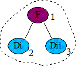
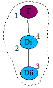
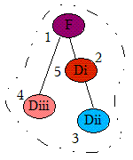
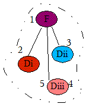

The AWT Modality
This document, together with the API documentation for modality-related
classes (such as java.awt.Dialog), briefly describes the new
modality features and how to use them. It contains the following sections:
- Definitions
- Modality types
- Show/hide blocking
- Modal exclusion
- Related AWT features
- Security
- Platform support
- Compatibility
- Examples
Definitions
Document - a window without an owner that, together with all its child hierarchy, may be operated on as a single self-contained document. Every window belongs to some document — its root can be found as the closest ancestor window without an owner.
Modal blocked window - a window, that:
- doesn't receive any user input events
- doesn't receive input focus
- keeps its Z-order below the modal dialog that blocks it
Warning! Some window managers allow users to change the window Z-order in an arbitrary way — in that case the last requirement may not be met.
Modal dialog - a dialog that blocks some windows while it is visible. The blocked windows are determined according to the dialog's scope of blocking.
Modal excluded window - a window that stays unblocked while the modal dialog is visible. If a window is modal excluded then all its owned windows and child components are also excluded.
Scope of blocking (SB) - the set of windows (instances of
java.awt.Window and all derived classes) that are blocked by
the modal dialog while it is visible.
Note: Everywhere in this document the notion of "window" is equal to a top-level window in the Java programming language — in other words an instance ofjava.awt.Windowor any descendant class.
Modality types
There are four supported modality types :
- toolkit
- application
- document
- modeless
- Modeless dialogs
A modeless dialog doesn't block any windows while visible. - Document-modal dialogs
A document-modal dialog blocks all windows from the same document except those from its child hierarchy. The document root is determined as the closest ancestor window without an owner. - Application-modal dialogs
An application-modal dialog blocks all windows from the same application except for those from its child hierarchy. If there are several applets launched in a browser, they can be treated either as separate applications or a single application. This behavior is implementation-dependent. - Toolkit-modal dialogs
A toolkit-modal dialog blocks all windows that run in the same toolkit except those from its child hierarchy. If there are several applets launched all of them run with the same toolkit, so a toolkit-modal dialog shown from an applet may affect other applets and all windows of the browser instance which embeds the Java runtime environment for this toolkit. See the security section below.
Modality priority is arranged by the strength of blocking: modeless, document-modal, application-modal and toolkit-modal. This arrangement is used when determining what dialog should remain unblocked if two are visible and block each other. It naturally reflects the nesting of a dialog's scope of blocking (SB): a modeless dialog has an empty SB, a document-modal dialog's SB is complete in some applications, and all the applications are run in one toolkit.
Notes about owners:
- Creating a document-modal dialog without an owner:
SinceDialogis a class derived fromWindow, aDialoginstance automatically becomes the root of the document if it has no owner. Thus, if such a dialog is document-modal, its scope of blocking is empty and it behaves the same way as a modeless dialog. - Creating an application-modal or toolkit-modal dialog with an
owner:
The scope of blocking for an application- or toolkit-modal dialog, as opposed to a document-modal dialog, doesn't depend on its owner. Thus, in this case the only thing that the owner affects is the Z-order: the dialog always stays on top of its owner.
Implementation note: Changing the modality type for a visible dialog may have no effect until it is hidden and then shown again.
Show/hide blocking
Showing the window or modeless dialog: "F"
All the visible modal dialogs are looked through — if F is from the SB
of one of them, it becomes blocked by it. If there are several such
dialogs, the first shown is used. If no such dialogs exist, F remains
unblocked.
Showing the modal dialog: "M"
When modal dialog M is shown, all the visible windows fall into one of
three distinct groups:
- Blockers of M (modal dialogs that block M and either are in M's child hierarchy, or are not blocked by M, or have a greater mode of modality, or block some other blocker of M)
- Blocked by M (windows from M's SB that are not blockers and are not in child hierarchy of any blocker)
- All other windows (windows or modeless dialogs outside M's SB and modal dialogs outside M's SB that do not block M).
After the modal dialog M is shown, it becomes blocked by the first shown dialog from the first group (if there are any), all the windows from the second one become blocked by M, and all the windows from the third group remain untouched.
In typical cases, when no child dialogs are shown before their owners, this rule can be simplified. (The following, simplified case, may leave out some details).
Showing the document-modal dialog: "M"
All the visible application- and toolkit-modal dialogs are looked
through — if M is from the SB of one of them,
it becomes blocked by it. If there are several such dialogs,
the first shown is used. If no such dialogs exist, M remains unblocked.
Showing the application-modal dialog: "M"
All the visible toolkit-modal dialogs are looked through —
if M is from the SB of one of them, it becomes blocked by it.
If there are several such dialogs, the first shown is used.
If no such dialogs exist, M remains unblocked.
Showing the toolkit-modal dialog: "M"
M remains unblocked.
| current/shown | frame & modeless | document | application | toolkit |
|---|---|---|---|---|
| - | - | - | - | - |
| document | blocked | - | - | - |
| application | blocked | blocked | - | - |
| toolkit | blocked | blocked | blocked | - |
After the modal dialog is shown, all the windows from its SB are blocked, except those that block this modal dialog.
Hiding the window or modeless dialog: "F"
If F was blocked by any modal dialog M, it becomes unblocked and is
removed from M's blocked windows list.
Hiding the modal dialog: "M"
If M was blocked by any other modal dialog, for example, "N",
it becomes unblocked and
is removed from N's blocked windows list. Then, all the windows and dialogs
blocked by M become unblocked, and after that the same checks
(as in Showing the modal dialog: "M")
are performed for each of them in the order they were initially shown.
Modal exclusion
There are two modal exclusion types introduced as of JDK 6
- Exclusion from blocking of toolkit-modal dialogs
- Exclusion from blocking of application-modal dialogs
- Application-modal exclusion
If a window is application-modal excluded, it is not blocked by any application-modal dialogs. Also, it is not blocked by document-modal dialogs from outside of its child hierarchy. - Toolkit-modal exclusion
If a window is toolkit-modal excluded, it is not blocked by any application- or toolkit-modal dialogs. Also, it is not blocked by document-modal dialogs from outside of their child hierarchy.
Implementation note: Changing the modal exclusion type for a visible window may have no effect until it is hidden and then shown again.
Related AWT features
Always-On-Top
When a modal dialog that is not always-on-top blocks an always-on-top window,
their relative Z-order is unspecified and platform-dependent.
The toFront() and toBack() methods
A modal dialog should always be above all its blocked windows. Thus, if a blocked
window is brought to the front, its blocking dialog, if any, is also brought to the
front and remains above the blocked window. Likewise, if a modal dialog is sent to
the back, all of its blocked windows are sent to the back to keep them below the
blocking dialog.
Minimizing, maximizing and closing blocked windows
When a modal dialog blocks a window, the user may not be able to maximize or
minimize the blocked window— however, the actual behavior is unspecified
and platform-dependent. In any case, the user can't close the blocked window
interactively— but it can be closed programmatically by calling the
setVisible(false) or dispose() methods on the blocked
window.
Blocked windows activations
When the user selects a blocked window, it may be brought to the front, along
with the blocking modal dialog which would then become the active window—
however, the actual behavior is unspecified and platform-dependent.
Hiding a modal dialog
When the modal dialog that currently has focus is hidden, it is unspecified
and platform-dependent, which other window will become the active window.
Any of the following may become the active window:
- The owner of the modal dialog - if the owner is unblocked.
- The
Window, which was active before this modal dialog gained focus - if the owner of the modal dialog is absent or is blocked.
Security
A special AWTPermission, "toolkitModality",
is required to show toolkit-modal
dialogs. This would prevent, for example, blocking a browser or
Java Web Start (JWS) by modal dialogs shown from applets.
The same permission is required to exclude a window from toolkit modality. This would prevent, for example, a dialog shown from an applet not to be blocked by a browser's or JWS's modal dialog.
Platform support
Two java.awt.Toolkit methods allow you to check whether
the current platform supports specific modality features:
isModalityTypeSupported(modalityType)
Returns whether the specified modality type is supported on the current platform. If mode "M" is not supported and a dialog is set to M-modal, it behaves as modeless.isModalExclusionTypeSupported(modalExclusionType)
Returns whether the given modal exclusion type is supported on the current platform. If exclusion type "E" is not supported and a window is marked as E-excluded, this has no effect.
Compatibility
The default modality type is application-modal. It is used by the API
calls: Dialog.setModal(true),
Dialog(owner, true), etc. Prior to JDK 6
the default type was toolkit-modal,
but the only distinction between application- and toolkit-modality is for
applets and applications launched from Java Web Start.
Examples
Example 1
- Frame F is shown
- Document-modal dialog Di is shown
- F becomes blocked by Di — it's in the same document
- Document-modal dialog Dii is shown
- Di becomes blocked by Dii — it's in the
same document

Example 2
- Frame F is shown
- Document-modal dialog Di is shown
- F becomes blocked by Di — it's in the same document
- Document-modal dialog Dii is shown
- Di becomes blocked by Dii — it's in the
same document

Example 3
- Frame F is shown
- Toolkit-modal dialog Di is created, but not shown
- Document-modal dialog Dii is shown
- F becomes blocked by Dii — it's in the same document
- Application-modal dialog Diii is shown
- Dii becomes blocked by Diii —
it's in the same application
- Di is shown
- Di becomes blocked by Dii — it's its owner
- Diii remains unblocked — it blocks Dii and
Dii blocks Di

Example 4
- Frame F is shown
- Toolkit-modal dialog Di is created, but not shown
- Document-modal dialog Dii is shown
- F becomes blocked by Dii — it's in the same document
- Application-modal dialog Diii is shown
- Dii becomes blocked by Diii — it's in the
same application
- Di is shown
- Diii becomes blocked by Di — Di
is not blocked
- Di remains unblocked
